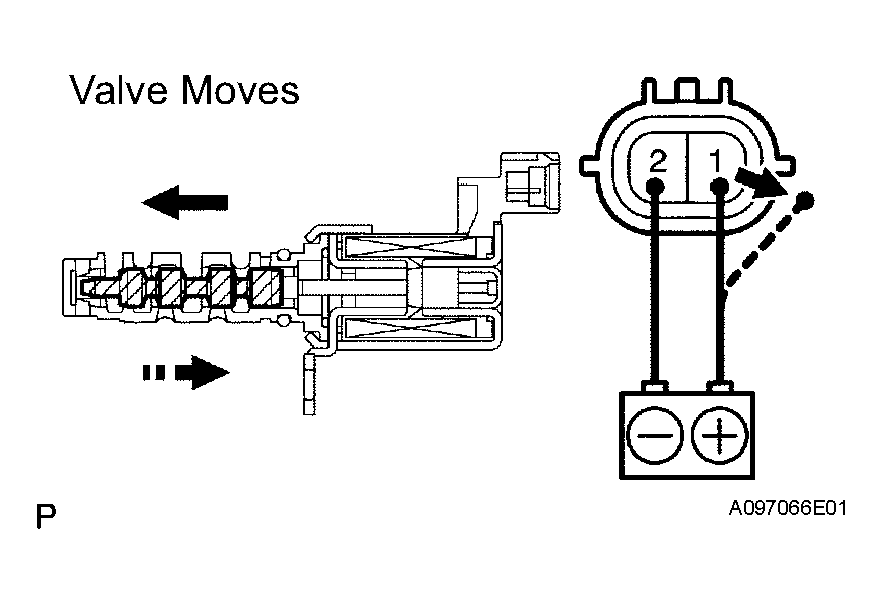
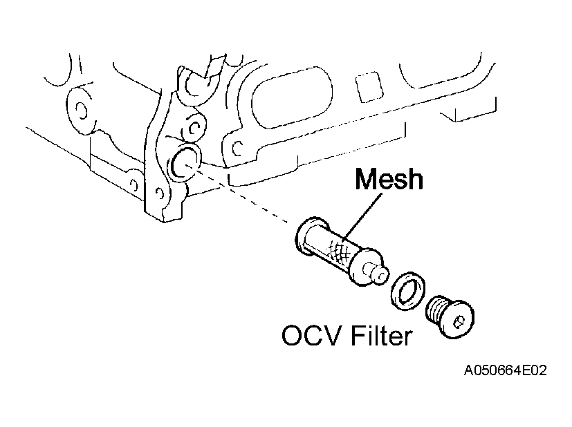

Inspection Procedure
Foreign objects are filtered out by the oil filter.
HINT:
Reed freeze frame data using the intelligent tester. Freeze frame data records the engine condition when malfunctions are detected. When troubleshooting, freeze frame data can help determine if the vehicle was moving or stationary, if the engine was warmed up or not, if the air-fuel ratio was lean or rich, and other data from the time the malfunction occurred.
- CHECK ANY OTHER DTCS OUTPUT (IN ADDITION TO DTC P0011 OR P0012)
- Connect the intelligent tester to the DLC3.
- Turn the ignition switch ON and turn the tester ON.
- Enter the following menus: DIAGNOSIS / ENHANCED OBD II / DTC INFO / CURRENT CODES.
- Read DTCs.
Result
RESULTDisplay (DTC Output) Proceed to P0011 or P0012 A P0011 or P0012 and other DTCs B HINT:
If any DTCs other than P0011 or P0012 are output, troubleshoot those DTCs first.
B: GO TO DTC CHART
A: Go to Next Step
- PERFORM ACTIVE TEST BY INTELLIGENT TESTER (OPERATE OCV)
- Connect the intelligent tester to the DLC3.
- Start the engine and turn the tester ON.
- Warm up the engine.
- Enter the following menus: DIAGNOSIS / ENHANCED OBD II / ACTIVE TEST / VVT CTRL B1.
- Check the engine speed while operating the Oil Control Valve (OCV) using the tester.
OK
TESTER OPERATION SPECIFIED CONDITIONTester Operation Specified Condition OCV OFF Normal engine speed OCV ON Engine idles roughly or stalls (soon after OCV switched from OFF to ON)
NG: Go to step 4
OK: Go to Next Step
- CHECK WHETHER DTC OUTPUT RECURS (DTC P0011 OR P0012)
- Connect the intelligent tester to the DLC3.
- Turn the ignition switch ON and turn the tester ON.
- Clear DTCs (see DTC CHECK / CLEAR ).
- Start the engine and warm it up.
- Switch the ECM from normal mode to check mode using the tester (see CHECK MODE PROCEDURE ).
- Drive the vehicle for more than 10 minutes.
- Read DTCs using the tester.
OK: No DTC output.
NG: Go to step 4
OK: END
- CHECK VALVE TIMING (CHECK TIMING CHAIN FOR LOOSENESS AND JUMPED)
- Remove the cylinder head cover (see REMOVAL ).
- Turn the crankshaft pulley, then align its groove with the timing mark "0" of the timing chain cover.
- Check that both timing marks on the camshaft timing sprocket and camshaft timing gear are facing upward as shown in the illustration.
If not, turn the crankshaft 1 revolution (360°), then align the marks as above.
OK: The timing marks on the camshaft timing gears are aligned with the timing chain cover surface.
NG: ADJUST VALVE TIMING
OK: Go to Next Step
- INSPECT CAMSHAFT TIMING OIL CONTROL VALVE ASSEMBLY (OCV)
- Remove the OCV (see CAMSHAFT TIMING OIL CONTROL VALVE ASSEMBLY ).
- Measure the resistance between the terminals of the OCV.
Standard resistance: 6.9 to 7.9 Ω at 20°C (68°F)
- Apply the positive battery voltage to terminal 1 and negative battery voltage to terminal 2. Check the valve operation.

Courtesy of © TOYOTA, LICENSE AGREEMENT TMS1002OK: Valve moves quickly.
NG: REPLACE CAMSHAFT TIMING OIL CONTROL VALVE ASSEMBLY
OK: Go to Next Step
- INSPECT OIL CONTROL VALVE FILTER
- Remove the generator (see REMOVAL ).
- Remove the OCV filter (see ).
- Check that the filter is not clogged.

Courtesy of © TOYOTA, LICENSE AGREEMENT TMS1002OK: Filter is not clogged.
NG: CLEAN OIL CONTROL VALVE FILTER
OK: Go to Next Step
- REPLACE CAMSHAFT TIMING GEAR ASSEMBLY
- Replace the camshaft timing gear assembly (see REMOVAL ).
NEXT
- CHECK IF DTC OUTPUT RECURS
- Connect the intelligent tester to the DLC3.
- Turn the ignition switch ON and turn the tester ON.
- Clear DTCs (see DTC CHECK / CLEAR ).
- Start the engine and warm it up.
- Switch the ECM from normal mode to check mode using the tester (see CHECK MODE PROCEDURE ).
- Drive the vehicle for more than 10 minutes.
- Confirm that no DTC is set using the tester.
Standard: No DTC output.
HINT:
DTC P0011 or P0012 is output when foreign objects in engine oil are caught in some parts of the system. These codes will stay registered even if the system returns to normal after a short time. These foreign objects are then captured by the oil filter, thus eliminating the source of the problem.
OK: SYSTEM OK
NG: REPLACE ECM